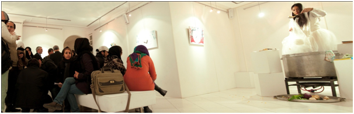

|
|

تکراری های ناپیدا / ناهید جعفری
به همراه گزارشی از پرفورمنس آذرمیدخت الهی در ارتباط با کار خانگی
شنبه26 فروردین 1391
تغییر برای برابری: ساعت هایت می گذرند بی آنکه احساس کنی، لحظه ای برای خودت وقت داشته ای. شب وقتی همه خوابیدند و خانه آرام گرفت، محصول کار بی وقفه ی تو چیزی نیست جز بازگشت به وضعیت اولیه : چند ساعت بعد دوباره ماراتن کار در خانه آغاز می شود فارغ از بی حوصلگی یا حتی مریضی و خستگی آنچه تو را به خود می طلبد خانه ای است که باید گردانده شود.
از دیدگاه جامعهشناسی، خانه داری از نمودهای تقسیم کار جنسیتی (تقسیم کار بر اساس جنسیت) است. در تقسیم کار جنسیتی از زنان و مردان انتظار میرود فقط به دسته خاصی از کارها که از قبل تعیین شدهاست و به اختیار خود شخص نیست بپردازند. در این تقسیم بندی، زنان مسئول کارهای خانه و خانهداری، و بزرگ کردن بچهها شمرده میشوند که کار بدون درآمد است. در نتیجه از نظر مالی وابسته به مردان میشوند و دسترسی به پولی که از آن ِ خود بدانند نخواهند داشت. [1]
گرایشهای گوناگون فمینیسم دیدگاههای گوناگونی به خانهداری دارند. مثلا فمینیسم رادیکال آن را «کاری در خدمت مردان و در راستای حفظ منافع مردان» دانسته، فمینیسم مارکسیستی خانهداری را کاری رایگان در خدمت منافع سرمایهداری و بازتولید نیروی کار میداند و فمینیسم سوسیالیستی آن را «کاری که هم مردان و هم سرمایهداری از آن منتفع میشوند» میداند. اما همه این گرایشها خانه داری را کاری واقعی میدانند.
خانهداری در ایران، بهطور سنتی از وظایف زنان دانسته می شود، در تحقیقی که درباره کارهای خانهداری در تهران سال ۱۳۸۶ انجام شد، مواردی شامل: نظافت روزانه منزل، نظافت کلی منزل، ظرفشویی، آشپزی، رسیدگی به درس بچهها، گردش و تفریح بردن بچهها، مراقبت از فرزندان هنگام بیماری، توجه به شستن و مرتب کردن لباس بچهها، خریدهای روزانه، تعمیرات جزیی (تعویض لامپ، سرویس کولر و تعمیر سشوار)، پذیرایی از مهمانان، جمع کردن میز غذا یا سفره، و شستن سرویسهای بهداشتی بررسی شده و نتیجه نشان میداد زنان بار اصلی کارهای خانه را بر دوش دارند. [2]
در سال ۱۳۸۶ مجلس خواستار محاسبه ارزش اقتصادی فعالیتهای خانگی زنان شد. بر اساس این مصوبه، ارزش کار خانگی زنان میبایست در تولید ناخالص داخلی محاسبه گردد. مجلس شورای اسلامی همچنین برای حمایت کردن از کار خانگی پیشنهاد کرد که زنان خانهدار تحت پوشش بیمه قرار بگیرند.طرحی که تا به امروز نتیجه ی خاصی نداشته است. در یکی از برآوردهای غیر رسمی در سال گذشته، ارزش مالی کار خانگی زنان حدود 640 هزار تومان در ماه برآورد شد.

اما در اغلب اوقات بهره ی زنان از کار خانگی بدون مزد تنها احساس سرخوردگی و افسردگی است، به ویژه زمانی که کار طاقت فرسای آنها که شامل تعطیلات و مرخصی و محدودیت اضافه کار هم نمی شود از سوی جامعه به سخره گرفته شده و یا کم ارزش تلقی می شود و باعث می شد سنگینی باری که زنان به تنهایی به دوش می کشند بیشتر بر آنها نمود کند.
چندی پیش آذرمیخت الهی، موضوع کار خانگی زنان را دستمایه ی پرفورمنسی کرده بود که در گالری ایست در تهران به اجرا گذاشته شد. آذرمیدخت متولد مرداد ماه 1362 و دانش آموخته ی نقاشی است که در طی سال های 85 تا 90 نمایشگاه های انفرادی متعددی از کارهای خود به شکل انفرادی یا گروهی برگزار کرده است. پرفورمنس تکراری های ناپیدا با موضوع روزمرگی ملال آور زنان خانه دار برگزار شد.
تابلوهایی که به دیوار آویزان بود و هرکدام حکایت از یک مورد از این تکرارها را داشت و نوشته های ریز و تکراری روی تابلوها دقت بازدیدکنندگان را می طلبید.
تازه عروسی که به نظر می رسید با پختن غذا خودش هم به نوعی پخته و شاید هم سوخته می شود.
- 
گفتگوی یک زوج جوان که از تابلوها دیدن می کردند برایم جالب بود و چند سئوال در ذهنم حک کرد:
زن: تو که اینطوری نیستی؟ هستی؟
مرد: چطوری؟
زن: همینطوری دیگه. همه این کارا رو من بکنم؟ غذا بپزم، کمد مرتب کنم، ظرف بشورم، اطو کنم و ...
مرد: نه عزیزم معلومه که هر وقت کمک بخوای حتما کمکت می کنم. حالا تو هم کمی کوتاه میایی و بعضی وقتا معافم می کنی!

با شنیدن این مکالمه از خودم می پرسم، تا کی دغدغه ی پختن غذا، شستن ظرفها، تمیز کردن خانه، رسیدن به بچه ها، پذیرایی از مهمان، خرید آذوقه و ... دغدغه ای زنانه است؟
titre documents joints
-
info document (BMP - 340.2 kb)
{kind=link}